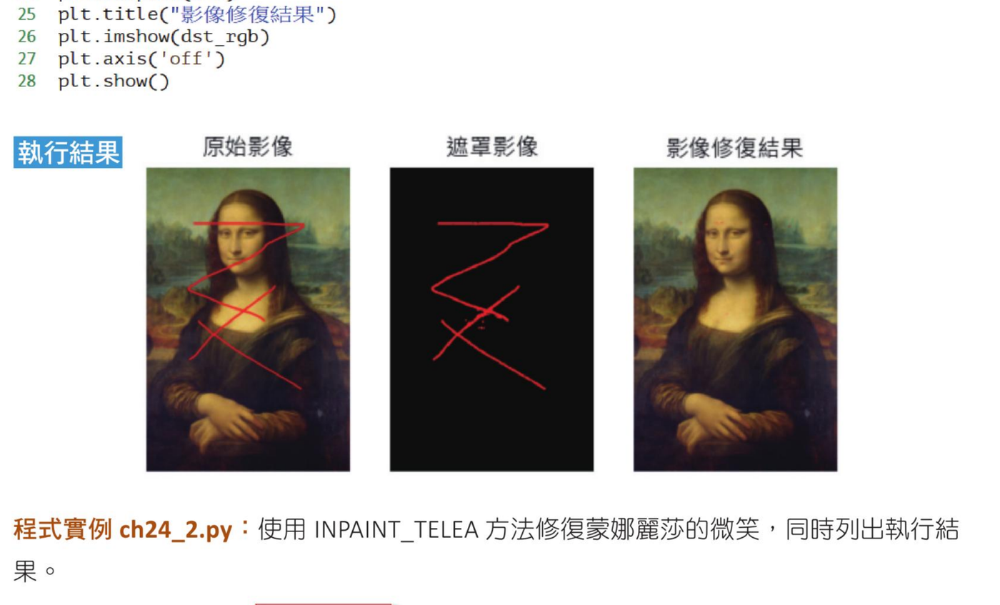
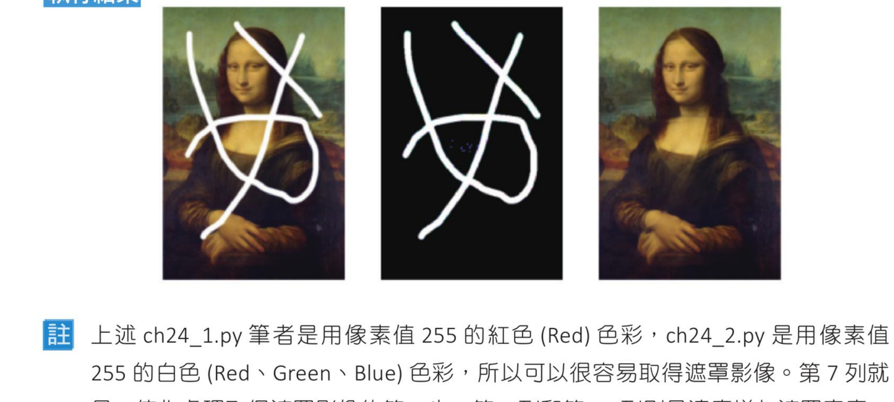
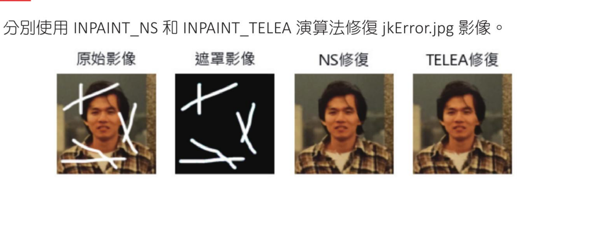

第 24 章
图像修复 - 抢救蒙娜丽莎的微笑
本章共 3 个小节 · 图像修复演算法 · inpaint() · INPAINT_NS · INPAINT_TELEA
实体照片放在家中久了，上面可能会有污点、或笔触，在人工修复时，最多又能用白色取代黑点之类，这一章主要是讲解应该如何使用 OpenCV + Python 做图像修复。OpenCV 的图像修复主要观念是使用相邻的像素值代替坏标记，让坏标记看起来和就像是图像内容。
24-1
图像修复的演算法
OpenCV 所提供的修复图像方法有 2 个。
24-1-1 Navier-Stokes 演算法
这个演算法来自 2001 年 Bertalmio、Marcelo、Andrea L. Bertozzi 和 Guillermo Sapiro 发表的论文：
Navier-Stokes, Fluid Dynamics, and Image and Video Inpainting
这篇论文所采用的是流体动力学，同时使用微分方程式，基本原理是启发式的。因为边缘是连续的，这个演算法会沿著边缘从已知区域传播到未知区域，保持边缘上的点具有等高的像素强度，同时匹配修复区域边界生成的向量。为此，使用流体力学的方法，得到颜色后，填充颜色以减少区域内的最小差异。
24-1-2 Alexander 演算法
这个演算法来自 2004 年 Alexandru Telea 发表的论文：
An Image Inpainting Technique Based on the Fast Marching Method
这个方法使用快速行进法（Fast Marching Method，简称 FMM），建构与维护形成窄轮廓的像素列表。这个方法在考虑要修复的图像区域，从区域边界开始，然后向区域内部逐渐填充所有内容。
Telea 方法会对所有要修复像素点的周围像素进行加权平均，周围的大小由函数的参数 inpaintRadius 半径决定，这个值应该要接近要修复区域的厚度。权重值依据下列方式决定。
- 要修复点与周围相邻点的距离，更近的相邻点权重越大。
- 靠近边界法线权重较大。
- 靠近边界轮廓线权重较大。
一旦像素点被修复，它会使用快速行进法（FMM）移动到下一个像素，直到所有像素点被修护完成。
24-2
图像修复的函数 inpaint()
OpenCV 有关修复图像的方法，基本上是采用 24-1 节所述的方法，然后将方法封装在 inpaint() 函数内，这个函数的语法如下：
dst = cv2.inpaint(src, mask, inpaintRadius, flags)
上述各参数意义如下：
| 参数 | 说明 |
|---|
dst | 修复结果图像。 |
src | 可以是 8 位元的单通道或是 3 通道图像。 |
mask | 遮罩，表示要修复的区域。 |
inpaintRadius | 考虑要修复点的圆形半径区域。 |
flags | 可以参考下表。 |
| 具名常数 | 值 | 说明 |
|---|
INPAINT_NS | 0 | 使用 Navier-Stokes 演算法，可以参考 24-1-1 节。 |
INPAINT_TELEA | 1 | 使用 Alexandru Telea 演算法，可以参考 24-1-2 节。 |
24-3
修复蒙娜丽莎的微笑
程式实例 ch24_1.py：使用 INPAINT_NS 方法修复蒙娜丽莎的微笑，同时列出执行结果。
# ch24_1.py
import cv2
import matplotlib.pyplot as plt
plt.rcParams["font.family"] = ["Microsoft JhengHei"]
lisa = cv2.imread('lisaE1.jpg')
ret, mask = cv2.threshold(lisa, 250, 255, cv2.THRESH_BINARY)
# 遮罩处理，适度增加要处理的表面
kernal = cv2.getStructuringElement(cv2.MORPH_RECT, (3, 3))
mask = cv2.dilate(mask, kernal)
dst = cv2.inpaint(lisa, mask[:, :, -1], 5, cv2.INPAINT_NS)
# 输出执行结果
lisa_rgb = cv2.cvtColor(lisa, cv2.COLOR_BGR2RGB) # 将BGR转RGB
mask_rgb = cv2.cvtColor(mask, cv2.COLOR_BGR2RGB) # 将BGR转RGB
dst_rgb = cv2.cvtColor(dst, cv2.COLOR_BGR2RGB) # 将BGR转RGB
plt.subplot(131)
plt.title("原始图像")
plt.imshow(lisa_rgb)
plt.axis('off')
plt.subplot(132)
plt.title("遮罩图像")
plt.imshow(mask_rgb)
plt.axis('off')
plt.subplot(133)
plt.title("图像修复结果")
plt.imshow(dst_rgb)
plt.axis('off')
plt.show()

原始图像、遮罩图像与使用 INPAINT_NS 修复后的图像。
程式实例 ch24_2.py：使用 INPAINT_TELEA 方法修复蒙娜丽莎的微笑，同时列出执行结果。
# ch24_2.py
import cv2
import matplotlib.pyplot as plt
plt.rcParams["font.family"] = ["Microsoft JhengHei"]
lisa = cv2.imread('lisaE2.jpg')
ret, mask = cv2.threshold(lisa, 250, 255, cv2.THRESH_BINARY)
# 遮罩处理，适度增加要处理的表面
kernal = cv2.getStructuringElement(cv2.MORPH_RECT, (3, 3))
mask = cv2.dilate(mask, kernal)
dst = cv2.inpaint(lisa, mask[:, :, -1], 5, cv2.INPAINT_TELEA)
# 输出执行结果
lisa_rgb = cv2.cvtColor(lisa, cv2.COLOR_BGR2RGB) # 将BGR转RGB
mask_rgb = cv2.cvtColor(mask, cv2.COLOR_BGR2RGB) # 将BGR转RGB
dst_rgb = cv2.cvtColor(dst, cv2.COLOR_BGR2RGB) # 将BGR转RGB
plt.subplot(131)
plt.title("原始图像")
plt.imshow(lisa_rgb)
plt.axis('off')
plt.subplot(132)
plt.title("遮罩图像")
plt.imshow(mask_rgb)
plt.axis('off')
plt.subplot(133)
plt.title("图像修复结果")
plt.imshow(dst_rgb)
plt.axis('off')
plt.show()

原始图像、遮罩图像与使用 INPAINT_TELEA 修复后的图像。
注
上述 ch24_1.py 笔者是用像素值 255 的红色（Red）色彩，ch24_2.py 是用像素值 255 的白色（Red、Green、Blue）色彩，所以可以很容易取得遮罩图像。第 7 列就是二值化处理取得遮罩图像的第一步，第 9 列和第 10 列则是适度增加遮罩宽度，最后达到图像修复的目的。
如果使用非接近 255 像素值的色彩污染图像，则会比较困难取得遮罩图像。
1. 分别使用 INPAINT_NS 和 INPAINT_TELEA 演算法修复 jkError.jpg 图像。

习题参考图：原始图像、遮罩图像、NS 修复与 TELEA 修复结果。